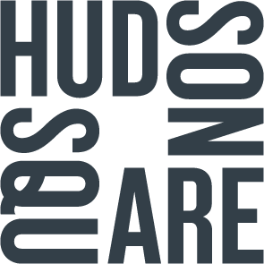
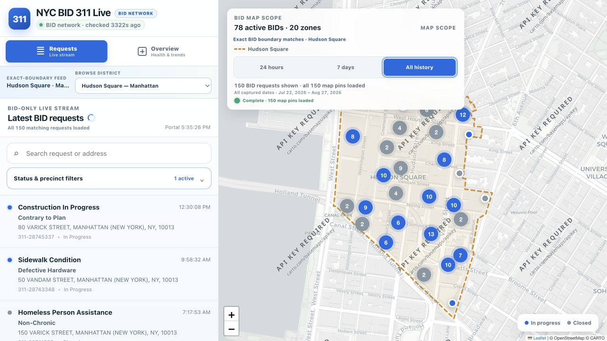
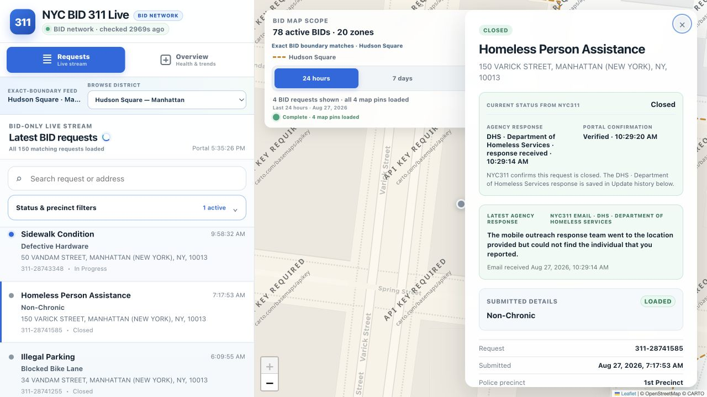
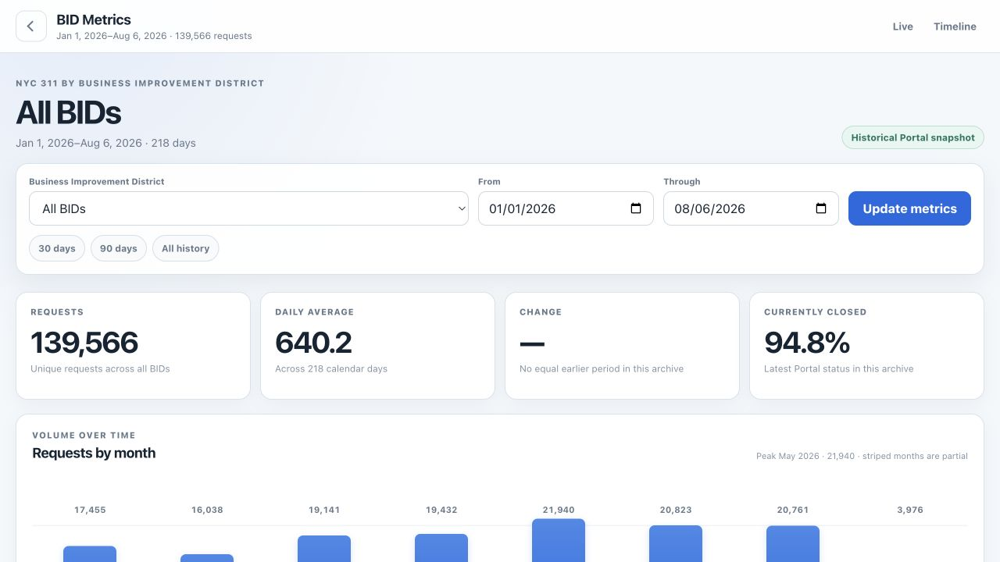

Unique NYC311 service requests across the combined project archive.
NYC BID 311
Independent civic data project
Archived August 2026
A live view of 311 activity inside NYC’s BIDs.
NYC BID 311 was an independent experiment in making service-request activity more useful to New York City’s Business Improvement Districts.
Live collection, status monitoring, email subscriptions, and the public dashboard have been shut down. This page remains as a record of the idea and the work behind it.
Project at a glance
The archive, in numbers.
The project combined a live citywide collector with a historical BID-only backfill. The headline total removes records present in both.
Records preserved during live operation, including catch-up discoveries.
Unique BID requests from January 1 through August 6, 2026.
Business Improvement Districts represented in the preserved metrics.
209,712 of 209,743 live records had full Portal-detail rows.
The combined total removes 11,414 requests shared by the live collection and historical BID datasets. BID totals can overlap at shared boundaries.
AI-assisted retrospective
Static archive summary
What the BID archive showed.
From January through July, full-month BID request volume stayed between 16,038 and 21,940. Illegal parking accounted for 17.7% of requests, while the combined noise categories accounted for a nearly identical 17.8%. Encampment and vendor-enforcement reports were the next most prominent BID-wide patterns. By August 6, 94.6% of archived BID memberships were recorded as closed.
24,661
Illegal-parking requests—the largest single category.
94.6%
Recorded closed at the final historical snapshot.
25.7%
Share of BID memberships within the five highest-volume districts.
The live collector operated from July 20 through August 27 and preserved 209,743 records. That figure includes audits and catch-up work, so it describes archive coverage—not the rate at which New Yorkers submitted new requests.
This one-time summary was generated with AI assistance from the static project archive. It is not an official NYC311 analysis and does not update.

Archived district example
Hudson Square, request by request.
The system matched each request’s coordinates against the exact BID boundary, then kept its submitted detail, status, and later agency response together.

Construction In Progress
In progressContrary to Plan
80 Varick Street · 10013
311-28745337Sidewalk Condition
In progressDefective Hardware
50 Vandam Street · 10013
311-28743348Homeless Person Assistance
ClosedNon-Chronic
150 Varick Street · 10013
DHS outreach visited; the individual was not found.
311-28741585Illegal Parking
ClosedBlocked Bike Lane
34 Vandam Street · 10013
311-28741255Noise
In progressAir Conditioner / Ventilation
7 Hudson Square · 10013
311-28715813Illegal Dumping
ClosedRemoval Request
117 King Street · 10014
311-28698320The Hudson Square name and logo identify the district illustrated here. NYC BID 311 was an independent project and was not affiliated with Hudson Square BID or NYC311.
From the archive
The project in action.
Views from the final preserved system, captured on August 27, 2026. Select either image to see the full-size screenshot.


One system for understanding BID-level 311 activity.
The project combined live NYC311 requests with official BID boundaries to create a district-focused view of conditions across the city.
- Collected incoming service requests
- Matched requests to BID boundaries
- Tracked agency updates and closures
- Built live maps and historical trends
A personal project could not sustainably carry service-level costs.
Reliable operation required always-on collection, email processing, reconciliation, storage, backups, and ongoing maintenance. Those costs became too high to justify for an independently funded personal project.
Without paying clients, sponsors, or an organization to support the system, there was no viable path to continue maintaining the NYC BID 311 data service responsibly.